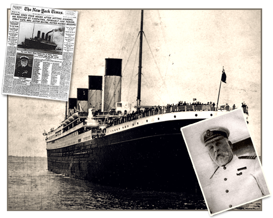

This project explores the Titanic dataset using D3.js to create interactive and insightful visualizations. The dataset includes demographic and survival information for passengers aboard the RMS Titanic. By visualizing this data, I aim to uncover patterns and factors that influenced passenger survival during the disaster.
My goal is to create at least three different types of charts using D3.js — including one complex visualization — to analyze and interpret trends within the data. We compare these web-based visualizations to prior Python (Matplotlib/Seaborn) analyses from Mini Project 1.
Use the navigation bar above to view the Visualizations and read the final Summary with reflections and insights.
